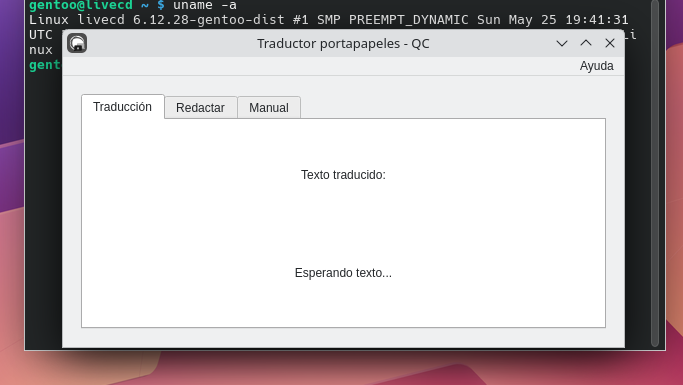

Traductor CLI
Traduce cualquier texto del portapapeles
download_manager.bin?Download Manager es una herramienta para Linux que permite acceder y descargar otros proyectos desarrollados por mi Jesús A Jiménez P. "QC" de forma sencilla, rápida y directa.

Todos los proyectos están empaquetados como archivos .bin autoejecutables, compatibles con cualquier distribución Linux. No necesitas dependencias adicionales ni privilegios de root.
download_manager.binchmod +x download_manager.bin./download_manager.bin 

Traduce cualquier texto del portapapeles
Consejo: Usa chmod +x archivo.bin para activar cualquier archivo antes de ejecutarlo.